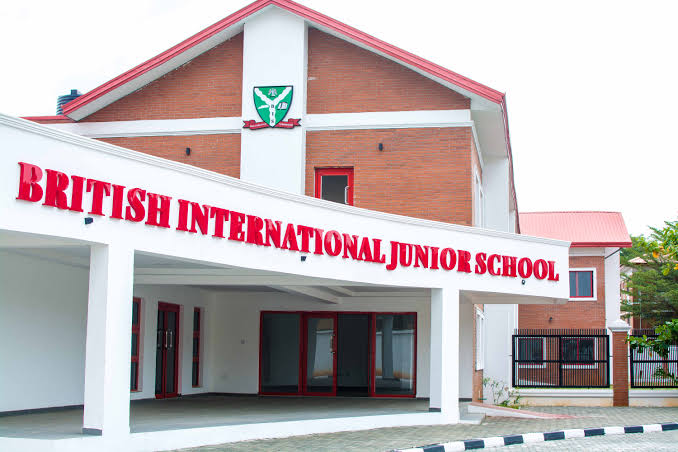
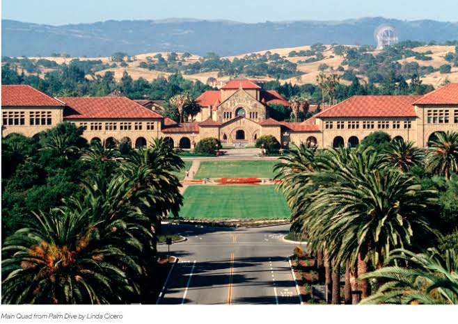

SCHOLARSHIP EXAMINATION TO STANFORD UNIVERSITY AND A CASH PRICE OF 3MILLION FOR TOP 300 CANDIDATE EACH.
This is organized by BRITISH INTERNATIONAL SCHOOL,lekki,lagos, for all Nigerians (both student and adult) with the support of ALHAJI ZIKIRULLAH OLAKUNLE HASSAN. This platform is to help young growing Nigerians student and adult willing to further their education overseas to study any course of their choice. Meanwhile this is totally a free sponsorship and a cash price of 3million for top 300 candidate.
Note that there is registration fee, which is #1000(A thousand naira) for all applying cadidate. Your examination center will be sent to the Email you fill in the form after payment verification.
Profile of NACHON New boss , Ustaz Zikrullah Kunle Hassan
Ustaz Zikrullah Kunle Hassan whose name was just forwarded to yhe senate by president Muhammadu Buhari for confirmation as the new chairman of the National Hajj Commission of Nigeria (NACHON) is coming on board with rich and intimidating academic and islamic activities credentials in addition to on the job experience in Hajj Operations.
His letter of nomination by president Muhammadu Buhari, to senate president Ahamed Ibrahim Lawan, was dated 28th,November,2019, and stamped as received on 3rd, december,2019.
Born on 26th,June,1961. the Osun state born NACHON chairman designate speaks Yoruba, Arabic and English. Ustaz Hassan who holds a BSc degree in Business Administration from the university of lagos, LLB from the Lagos State University and BL from the nigerian law school, lagos, was chairman/Amir Hajj of Osun State Muslim Pilgrims Welfare board (2010-2018); Senior Special Assistant to the Osun state Governor on Religious Affairs,(2010-2018); Principal counsel, Olakunle Hassan & Association (2006-2010) and chief Executive , Tafsan Tours & Travels, (Official Hajj &Umrah Operator of Nasirullahi Fathi Society of Nigeria- NASFAT).\
He is also the chairman, Board of Trustees of FAJR Centre (A standard centre for memorization and teaching of Islam & Arabic ) from 2019 till date and was chairman, forum of state chairmen and secretaries of Muslim Pilgrims welfare board agency between 2014 and 2017 and currently the director of dawah(islamic propagation) of the companion (an association of muslim men) in business and the professions since 2004.

British International School (BIS), Lekki, Lagos, Nigeria.
BIS is a multi-national, co-educational school offering a British style curriculum to students aged between 11 and 18 years. It serves both the Nigerian local community and expatriates looking for a British education within an international setting.
The school opened in September 2001 and occupies a large and attractive thirty acre site on Victoria Island in the heart of the city. It is both day and boarding with boarders representing approximately one third of the current school population. Weekly boarding is offered alongside full boarding and we offer a family atmosphere in which all students are known and valued, with class sizes never going above twenty.
Students are prepared for the IGCSE and Advanced Level courses of Cambridge International Examinations (CIE) with enviable success in terms of results. We are committed to educating the whole child so that our students become rounded citizens of the future world. All are encouraged to take part in a wide range of extra-curricular activities whether sporting, cultural or creative.
We hope that you will enjoy browsing this site and better still will come and visit us in person. You will be made very welcome!
The Leland Standard Junior University, Stanford, California, USA.
The Leland Stanford Junior University was founded in 1885 by Jane and Leland Stanford in memory of their only child, Leland Jr., who died of typhoid fever at 15. After his 1884 death, the Stanfords determined that they would use their wealth to do something for other people’s children.
They decided to create a university that was, from the outset, untraditional: coeducational in a time when most private universities were all-male; nondenominational when most were associated with a religious organization; and practical, producing cultured and useful citizens. The Founding Grant states the university’s objective is “to qualify its students for personal success, and direct usefulness in life” and its purpose “to promote the public welfare by exercising an influence in behalf of humanity and civilization.”
The campus sits on the ancestral land of the Muwekma Ohlone Tribe. This land was and continues to be of great importance to the Ohlone people. Today, the university and the Muwekma Ohlone Tribe are partners in community-led archaeology, historic interpretation and a native plant garden.

Leland Stanford, who served as California’s governor and senator, devoted to the university the fortune he had earned, first by supplying provisions to the ’49ers mining for California gold and later as one of the “Big Four,” whose Central Pacific Railroad laid tracks eastward to meet the Union Pacific and complete the transcontinental railway. Included in the Founding Grant was the Stanfords’ Palo Alto Stock Farm for the breeding and training of trotting horses, 35 miles south of the family’s San Francisco residence. The Stanfords stipulated that the land they conveyed to the university could not be sold, and the campus still carries the nickname “the Farm.”
The Stanfords engaged landscape architect Frederick Law Olmsted to design the campus. Their collaboration with Olmsted and the architectural firm of Shepley, Rutan, and Coolidge resulted in Stanford’s characteristic buildings of local sandstone with red-tiled roofs, surrounding a cloistered quadrangle with Memorial Church as its focus. The rectangular plan of the Main Quadrangle was designed to provide for expansion through a series of quadrangles developed laterally. Stanford opened its doors on Oct. 1, 1891, with some 555 students enrolled in the first year.